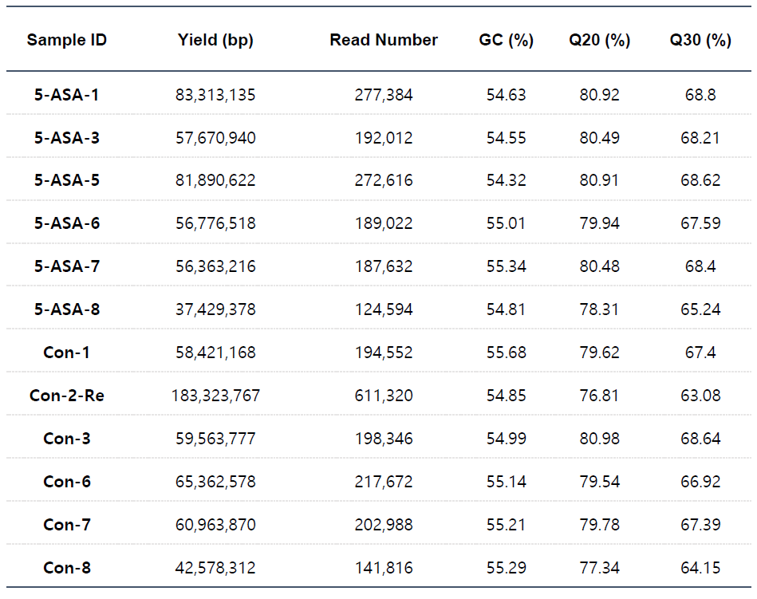
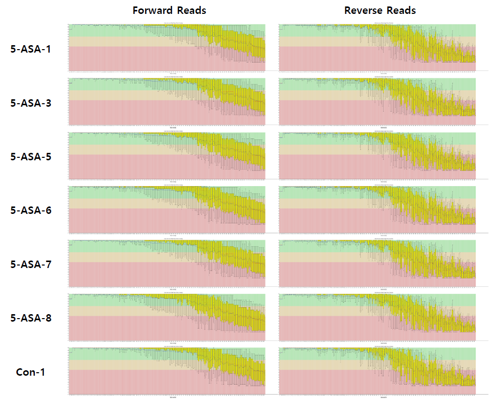
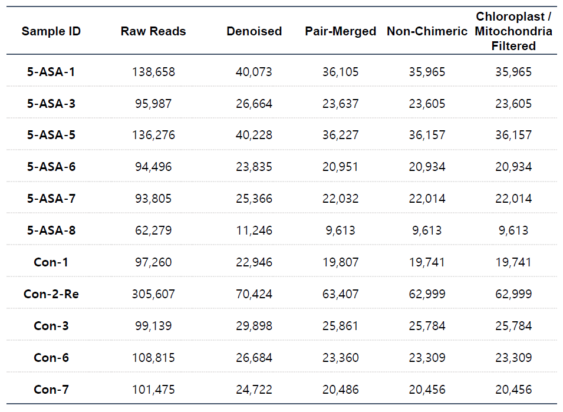
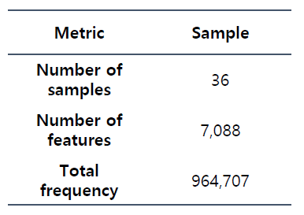
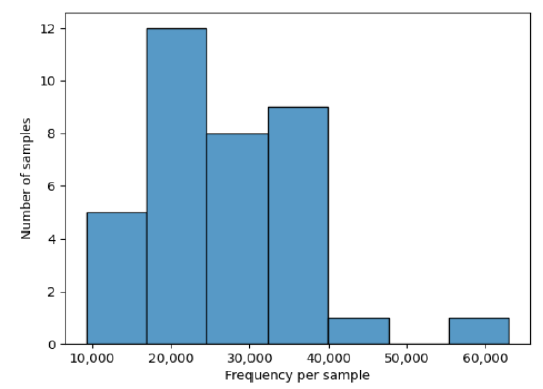

16S rRNA Metagenome Sequencing
Customer Information
- Organization : ㅇㅇ바이오
- Customer name : 홍길동 선생님
Sample Information
- Sample type : Metagenomic gDNA
- Quantity : 36 samples
- Analysis type : 16S rRNA metagenomic sequencing을 이용한 샘플 내 균총 분석
Analysis Overview
1. Sequencing
- 16S rRNA V3-V4 region PCR amplification
- Library construction (Nextera XT library prep kit)
- Sequencing (illumina MiSeq 300bp paired end)
2. Quality Control
- Check sequencing quality (FastQC-v.0.11.9)
- Check over-represented sequences
3. Denoising Process
- Trimming low quality reads (Trimmomatic v0.39)
- Error correction of noisy reads (DADA2-Qiime2.2021.11)
- Remove chimeric sequences (DADA2-Qiime2.2021.11)
4. Taxonomy Classification
- Taxonomic sequence classification (reference database: SILVA138)
- Visualization
5. Diversity Analysis (Qiime2.2021.11)
- Alpha diversity
- Beta diversity
Raw Data Information
Sequencing 결과 yield는 충분하게 확보되었습니다.
- Yield(bp) : Sequencing 된 total base pair 수 입니다.
- Read number : Sequencing을 통해 생산된 total read 수 입니다.
- GC ratio : 전체 염기서열 중 GC contents의 비율입니다.
- Q20 : 1/100 이하의 확률(99.9% 정확도)로 error가 생길 것으로 추정되는 base pair 비율입니다.
- Q30 : 1/1,000 이하의 확률(99.9% 정확도)로 error가 생길 것으로 추정되는 base pair 비율입니다.
Per Base Sequence Quality
- Sequence 내 각 position에서의 평균 data quality를 나타냅니다.
- illumina sequencing platform의 특성상 sequence 말단으로 갈수록 sequencing quality가 낮아지는 경향이 있습니다.
Denoising and Filtering process
- Denoising : adaptor, index 등의 artificial sequence를 제거하고, 전술한 read 말단의 low quality 부분을 잘라낸 후 noise를 수정/제거합니다.
- Pair-Merging : 최종적으로 남은 신뢰할 수 있는 고품질의 forward read와 reverse read를 이어 붙여 하나의 긴 read로 만들어줍니다.
- Remove Chimeric Sequences : 복수의 16S rRNA gene으로부터 증폭되어 발생한 chimeric sequence를 제거합니다.
- Chloroplast/Mitochondria Filtered : Sequencing 과정에서 유입되는 Chloroplast/Mitochondria 유래 read를 제거합니다.
Feature Table Summary

Summary Table

Frequency per Feature
- 최종적으로 선별 및 확보된 서열들은 Representative Sequence (feature)로 정의하고, 확보된 전체 feature의 종류, 전체 빈도, feature 당 빈도를 확인했습니다.
Bacteria Taxonomy Classification
/2. Taxonomy Classification (Qiime2)/Phylum_top10.png)
/2. Taxonomy Classification (Qiime2)/Class_top10.png)
/2. Taxonomy Classification (Qiime2)/Order_top10.png)
/2. Taxonomy Classification (Qiime2)/Family_top10.png)
/2. Taxonomy Classification (Qiime2)/Genus_top10.png)
- 각 level에서 상위 10개 taxon의 taxonomic classification을 확인했습니다.
- 상세 결과는 FTP서버의 "3. Taxonomy classification (Krona Plot)" 폴더 참고
Alpha diversity - Rarefaction
/4. Diversity/1. Alpha/alpha_sample.png)
- Shannon's Diversity index (alpha diversity) : Sample 내 미생물 다양성을 나타내는 지표입니다.
- Sampling depth가 올라감에 따라 일정수준에서 지표가 saturation이 되는 현상을 확인할 수 있습니다. saturation이 되는 구간은 각 sampling을 수행한 표본집단이 모집단을 충분히 반영하는 것을 의미합니다.
- 군집간 분석 (Beta 의 경우 , 다양성이 급격하게 변하는 구간에서 수행할 경우 Sampling Bias 로 인해 실제 군집분포와 상이할 가능성이 있습니다 . 따라서 Sample 내 다양성 지표가 완만한 구간에서 Sampling 수행하여 군집간 분석을 진행합니다
Beta diversity
/4. Diversity/2. Beta/beta-weighted.png)
- 미생물 균총의 양(weighted)을 이용하여 sample 별 거리 계산 후 좌표공간에 나타냈습니다.
/4. Diversity/2. Beta/beta-unweighted.png)
- 미생물 균총의 유무(unweighted)를 이용하여 Sample 별 거리 계산 후 좌표공간에 나타냈습니다.
Comment
FTP